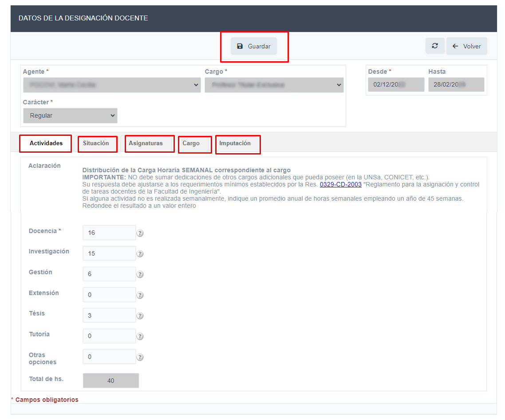
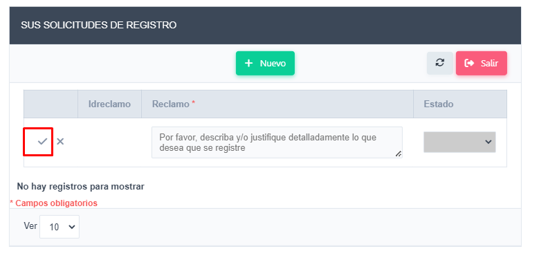

Pasos para la modificacion y consulta de datos de designaciones
-
En el Menú Designaciones, podrá observar los cargos docentes.
- En color Rojo se verán los cargos No vigentes
- En color Verde se verán los cargos Vigentes
-
En la columna Acciones: Con el icono puede iniciar la gestión para solicitar cambios del Ítem en cuestión, y con el icono podrá editar la información y se visualizará la siguiente ventana
 -
Se deben registrar las horas dedicadas a cada actividad. Según Res. 0329-CD-2003 "Reglamento para la asignación y control de tareas docentes”. Si necesita información sobre cómo completar los campos: Docencia, Investigación, Gestión, Extensión, Tesis, Tutorías u otras operaciones, haga clic en el icono de ayuda. El Total de hs. visualizará la sumatoria de horas de los campos anteriores.
-
En las pestañas "Situación", "Asignaturas", "Cargo" e "Imputación", podrá ver la información asociada.
-
Para finalizar el registro de tareas hacer clic en el Botón Guardar.
-
En el caso de que falte una designación, haciendo clic en el botón +Solicitudes de Registro, podrá enviar a los administradores datos relevantes para agregar un nuevo registro.
 -
Para finalizar la carga debe hacer clic en el icono de tilde, su solicitud quedará pendiente, y será procesada por personal administrativo.
-
Desde la facultad se verificará su solicitud, y en caso de corresponder podrá luego visualizarla en el Menú.